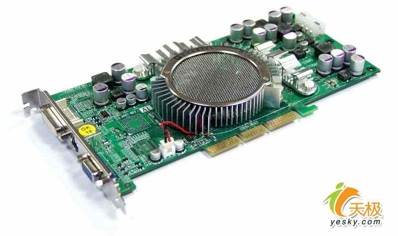
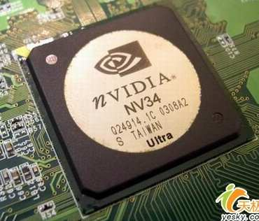

硬件基础教程
作者：TeliuTe 来源：基础教程网
显卡是连接显示器的，在机箱后面有一个蓝色梯形接口，就是显卡的输出端，下面我们来看一个练习；
1、显卡
1）显卡分为独立显卡和集成显卡，独立显卡的芯片单独在一个插卡上，集成显卡的芯片放在了主板上；

2）独立显卡常见一般有NV和ATI等，集成芯片有Intel和SIS等，集成显卡一般没有独立显存，使用内存作为共享；

3）独立显卡的处理效果要好速度快，有独立显存一般128M或256M，缺点是功耗大、发热量大；
2、显卡维护
1）独立显卡选择速度快、显存大的种类，一般注意散热和清除灰尘；
2）显卡需要安装对应的驱动程序，独立显卡有单独的驱动光盘，集成显卡一般在主板驱动的Video文件夹中；
3）独立显卡风扇时间长了可能会发出噪音，除了清理灰尘外，还可以适当滴一点润滑油；
本节学习了显卡的基础知识，如果你成功地完成了练习，请继续学习下一课内容；
本教程由86团学校TeliuTe制作|著作权所有
基础教程网：http://teliute.org/
美丽的校园……
转载和引用本站内容，请保留版权信息和本站链接。